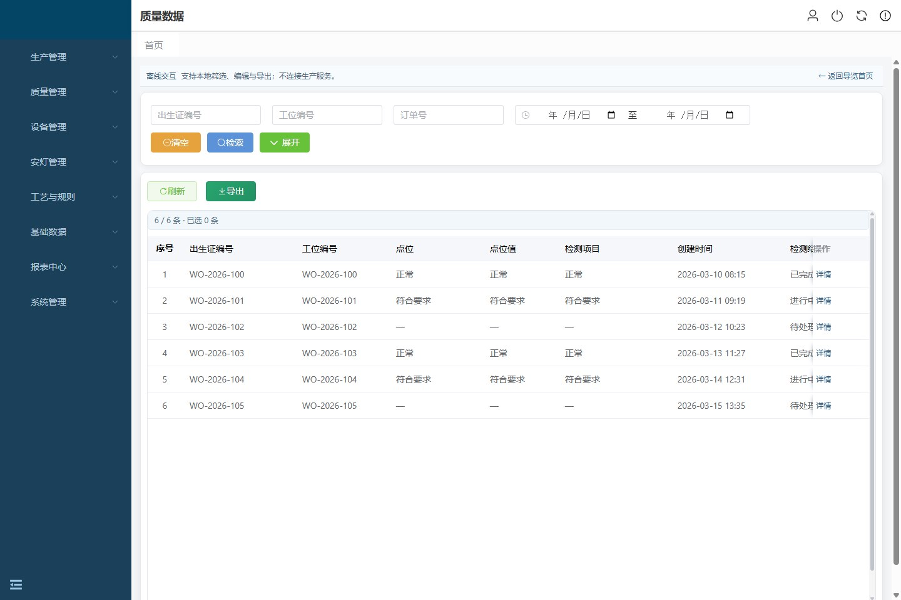
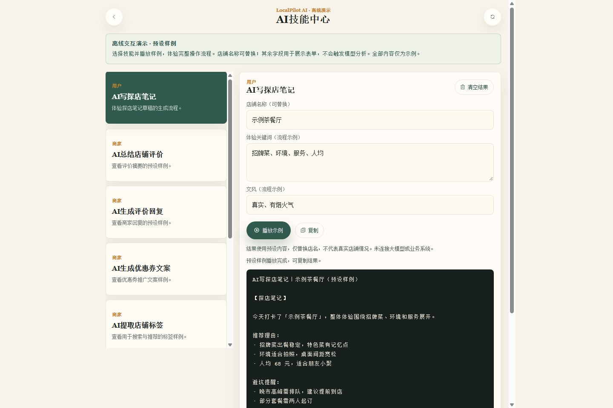
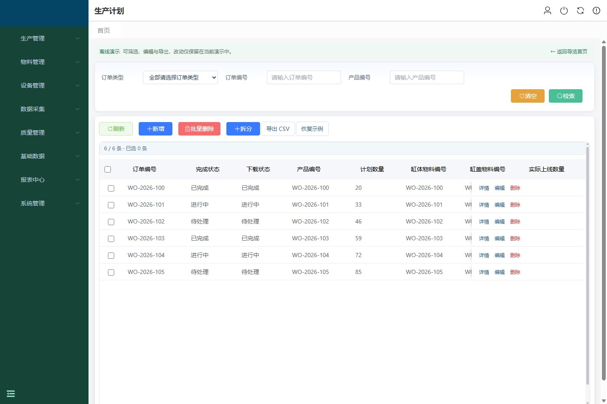

A MESQUALITY / TRACEABILITY
把每一条装配数据，放回业务现场。01
在具体的业务里，理解系统的复杂。
两套制造业 MES，一项 AI 应用扩展，
从关键界面走进背后的工程实现。


01 / SELECTED WORK

企业项目以代号展示；界面使用示例内容，交互演示不连接生产服务。
02 / BEHIND THE INTERFACE
技术的价值，藏在具体问题的处理里。
选取三个切面，展开系统背后的思路。
03 / ABOUT THIS COLLECTION
这里收录两套制造业 MES 与一项 AI 应用扩展。从业务场景出发，用界面、流程和技术说明，呈现项目的不同侧面。
A、B 使用企业代号；HMDP 保留开源扩展的背景说明。演示提供离线界面导览与预设样例，不连接生产数据库或实时大模型。
回到项目索引